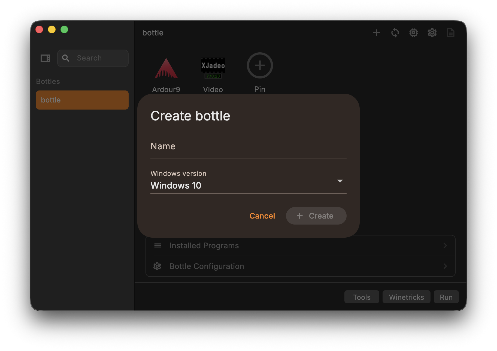
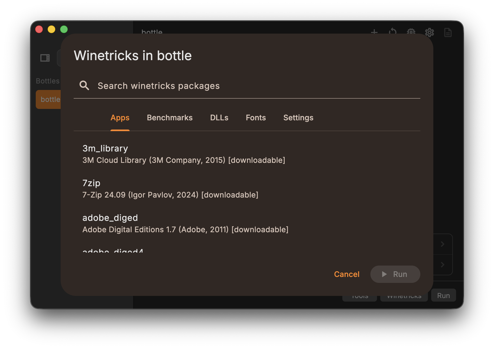
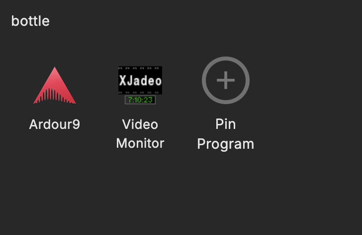
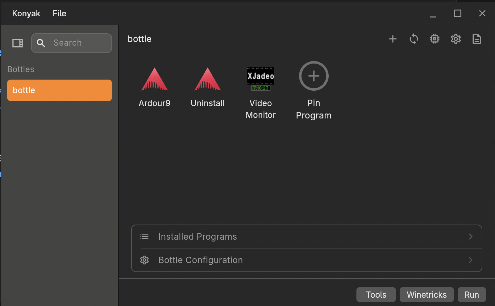

macOS
Wine support for arm64 hosts, with macOS-specific graphics and compatibility settings kept in the bottle UI.

Wine and Proton, organized
A quiet desktop home for Windows apps on macOS first, with bottles, pinned launchers, Winetricks, and platform settings in one place.
Built for predictable bottle management, runtime updates, and launcher workflows.
Screenshots
Konyak keeps daily Wine and Proton tasks close: create bottles, pin programs, browse Winetricks packages, and switch between macOS and Linux views.




Platform aware
Konyak starts with arm64 macOS and is being shaped for x86_64 Linux, with each platform getting the settings that belong there.
Wine support for arm64 hosts, with macOS-specific graphics and compatibility settings kept in the bottle UI.
Wine and Proton runtimes for x86_64, DXVK for D3D8-D3D11, and vkd3d-proton for D3D12.
Daily flow
Use the sidebar to switch between bottles and focus on the selected environment.
Start pinned apps, installed shortcuts, or a Windows executable from the same view.
Open tools, change bottle settings, or run Winetricks without changing context.
Open development
Konyak is under active development as a desktop bottle manager for macOS and Linux.